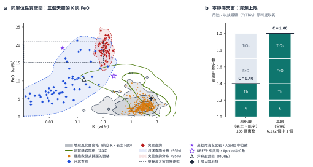
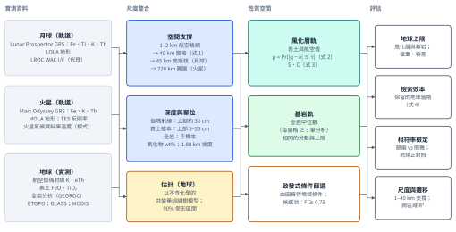
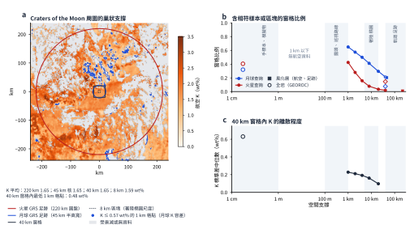
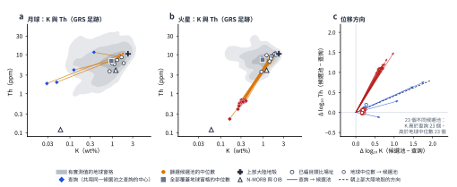
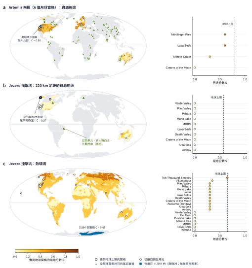
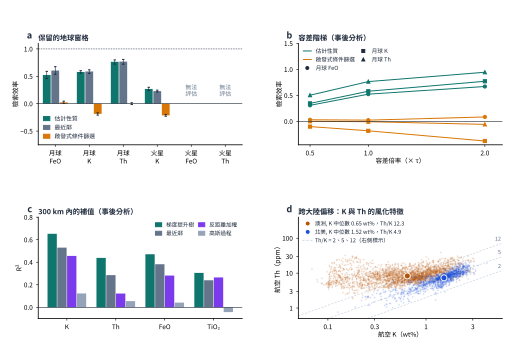

重點
- 在軌道足跡尺度上，地球風化層從未同時符合月球的 FeO、TiO₂、K 與 Th；缺口一部分來自風化，一部分來自岩石成因。
- 以場域為準的啟發式篩選重現了專家的類比類別，卻把候選推向富鉀、富釷的大陸地殼，遠離目標。
- 邊界條件清單把地形分配給野外場址、原料化學分配給模擬物、熱環境分配給試驗艙。
摘要
地球類比場址依功能定義，卻多半依場域的定性描述挑選。我們檢驗這些場域能重現月球與火星目標實測性質到什麼程度：把 117 個月球與火星查詢窗格和 75,860 個地球窗格，放進一個在單位、空間支撐與感測深度上整合的性質空間，並把地球上限定義為任何實測地球窗格能達到的最佳用途分數。在軌道光譜儀 40–220 km 的支撐上，沒有任何地球風化層窗格能重現月球的資源化學（上限平均 0.75），火星 FeO 高於所有地球表土足跡，火星夜晚與月球冷阱也在地球範圍之外；這些限制在隨機權重與加倍容差下仍然成立。化學上的不足有兩個來源。在同一批窗格中，全岩能符合 59 個月球查詢中 25 個的全部四項資源性質，表土一個也不能，可見地球的風化解釋了一部分；高鈦月海玄武岩與火星地殼的鐵，則即使在全岩中也很罕見。符合月球鉀與釷的公里尺度斑塊出現在 65% 的窗格中，平均到 40 km 後即消失。啟發式篩選重現了專家的場域類別，使目錄類比密度提高約 12 倍，卻在全部 20 個不同的候選池中把候選推向富鉀、富釷的大陸地殼；依同單位性質排序找回相符窗格的機會則遠高於篩選（檢索效率 0.27–0.77，篩選為 −0.21 至 0.02）。我們提出一份邊界條件清單，把地形、化學與熱環境分別分配給相符的野外場址、實驗室模擬物與熱真空設施。
關鍵詞： 行星類比場址 · 月球 · 火星 · 比較行星學 · 伽瑪射線光譜 · 現地資源利用 · 空間預測 · Artemis · Mars 2020
1緒論
1.1 作為功能推論的行星類比
地球類比場址是一種推論工具：在地球某處觀察到的性質或演練的程序，被拿來代表月球或火星上對應的性質或程序。數十年來，類比場址的野外任務驗證了儀器、測試了探測車通行性、演練了採樣與艙外活動、模擬了通訊延遲，也訓練了乘員 (NASA, n.d.; Léveillé, 2009; Preston & Dartnell, 2014)；而它所允許的推論明確是功能性的：一個場址是其用途所依賴之性質的類比 (Foucher et al., 2021)。玄武岩熔岩區可以用於移動測試，卻可能與現地資源利用（ISRU）試驗的原料化學不同，兩者也都未必能重現棲所必須承受的熱環境。
類比場址多半依專家經驗與 NASA Planetary Analog Explorer 這類整理好的清單挑選 (NASA Science, n.d.)，並以場域描述：乾旱、無植被、玄武岩質、火山、寒冷。阿他加馬沙漠、夏威夷火山與麥克默多乾谷之於火星，Craters of the Moon 這類年輕玄武岩區之於月球熔岩地形，都是典型例子（表 S23）。依場域挑選有實際的優點：這些場址同時具備多種關注特徵、交通可及，也累積了數十年的研究。它尚未提供的，是一個量化的說明：某個場址重現特定目標實測性質的程度有多高，以及地球上任何地方最多能達到多高。行星分異讓地球、月球與火星的地殼組成各不相同 (Taylor & McLennan, 2009)，依地球地質定義的場域類別可能也帶著地球的地球化學組成。
因此，本研究的目的不是把野外場址彼此排名，也不是取代它們，而是為每個場址建立一份邊界條件清單：它重現了目標的哪些實測性質、在什麼空間尺度與感測深度上，以及哪些性質必須改由實驗室模擬物或試驗設施提供。作業、後勤、乘員訓練與移動，主要依賴地球場址能良好提供的性質，下文的結果也在公里尺度粗糙度上證實了這一點；這份清單則說明其餘的性質必須從哪裡取得。
1.2 量化整合的缺口
以相同的量比較行星目標與地球場址，並不像看起來那麼簡單。月球與火星的組成來自足跡數十到數百公里的軌道伽瑪射線與中子光譜 (Lawrence et al., 2002; Boynton et al., 2007; Wilson et al., 2015; Taylor et al., 2010)，地球的地球化學則來自航空伽瑪射線測量、土壤樣本與岩石分析，空間支撐從手標本到數公里不等 (Minty et al., 2009; Duval et al., 2005; Smith et al., 2013; Lehnert et al., 2000)；野外試驗本身則在數公尺到數百公尺的露頭上進行。地形、反照率與地表溫度在解析度、照明幾何與當地時間上也都不同。數位土壤製圖能以環境共變量推估被覆蓋的地球性質 (Poggio et al., 2021)，全球岩性圖描述母質 (Hartmann & Moosdorf, 2012)，但這些產品很少在相同支撐下與行星量測對照。相關研究比較過火星與地球影像 (Meng et al., 2024)、把地貌偵測器跨天體遷移 (Silburt et al., 2019)，也以實測的氫、冰穩定性與照明排序月球極區 (Flahaut et al., 2020; Peña-Asensio et al., 2025)；本文整合的則是性質本身。
因此每個結果都必須說明尺度。行星組成是在軌道光譜儀 40–220 km 的支撐上量測的，所以主要的比較在這個支撐上進行，其結論涉及的是軌道足跡所平均的風化層、著陸區或區域資源調查，而不是個別露頭。讀者可能合理地質疑：在這個尺度上，局部露頭被平均掉了。因此本文把同樣的比較，沿著公里尺度的航空區塊一路延伸到個別全岩分析（第 2.1 節），並分別為風化地表與其下的岩石計分，把兩者分開。
1.3 研究問題與貢獻
我們在一個於地球、月球與火星之間整合了單位、空間支撐與感測深度的性質空間中，處理三個研究問題。RQ1 關於可行性與其上限：在多項性質、同單位的約束下，地球是否有窗格能在風化層與基岩兩種尺度上重現月球與火星目標的組成與物理環境？限制最佳相符的是什麼？化學上的不足有多少來自地球的岩石，又有多少來自地表的風化？RQ2 關於啟發式類比的效度：依定性場域條件選出的候選，以及以同樣方式挑出的經典類比場址，是否接近這個上限，還是在性質空間中有系統性的偏移？RQ3 關於可推廣性：在沒有實測的地方能預測地球性質到什麼程度？它們如何隨空間支撐改變？限制它們跨區域遷移的是什麼？
圖 1 以真實資料呈現這個性質空間。月球與火星查詢位於高鐵、低鉀處，地球風化層窗格位於低鐵、較高鉀處，地球基岩則介於兩者之間；Apollo 樣本中的高鈦月海玄武岩與 KREEP 玄武岩、洋脊玄武岩，以及上部大陸地殼標出各個端元。目標與用途的地球上限，是實測地球窗格在給定容差內能達到的最佳分數，分別就風化層（表土與航空量測）與基岩（全岩分析）計算。啟發式篩選依場域選出地球窗格；如果所選位於地球的組成上，它的候選就比依性質檢索到的窗格離目標更遠。
本研究有四項貢獻。第一，正式定義風化層與基岩兩種尺度的地球上限，清點地球在軌道尺度上無法提供的性質及其成因，說明它們對權重、容差與空間支撐的敏感度，並把化學不足中由地球風化造成的部分，與由行星分異造成的部分分開。第二，以事先登記、並使用獨立地球量測的檢定，說明啟發式場域條件會重現專家類別，同時把候選推向大陸地殼的組成。第三，說明為什麼未實測的地球化學無法只靠地形與氣候跨大陸外推，卻能在實測附近補值。第四，把這些結果轉成類比用途在野外場址、實驗室模擬物與試驗設施之間的模組化分工，並以 Artemis 南極區域與 Jezero 撞擊坑為例具體推演。產出是供進一步研究的候選與需求，而非已驗證的類比。

2方法：跨天體的統一性質空間
圖 2 總結整個架構。三個天體的觀測在空間支撐、感測深度與單位上整合，沿風化層與基岩兩條軌對應到同一個性質向量，再以四種方式評估：每個目標的地球上限、保留地球窗格上的檢索效率、啟發式篩選的檢定，以及前三者對尺度與區域的依賴。

2.1 空間整合與多尺度離散化
目標與候選都是邊長 L ∈ {20, 40, 80} km 的切平面正方形窗格，只在相同 L 之間比較。地球索引包含 ETOPO 2022 (NOAA NCEI, 2022) 中海洋不超過 5% 的陸地窗格，共 484,015 個（20 km 326,374 個、40 km 75,860 個、80 km 81,781 個），涵蓋到南北緯約 84°；本文的分析使用 40 km 窗格。117 個查詢窗格包括 37 個具名場址（月球 19 個，其中 6 個南極窗格依照明圖選出 (Mazarico et al., 2011)；火星 18 個），以及在檢視任何數值之前於球面上均勻抽出的 80 個窗格（月球 40 個在赤道 60° 內，火星 40 個在 55° 內）（圖 S2）。
軌道伽瑪射線光譜儀與航空伽瑪射線測量量到的都是地表以下數十公分，單位相同，但空間支撐相差好幾個數量級。因此地球格網要先以軌道足跡核平均，才與行星值比較：
其中 xk(si) 是距窗格中心 w 為 di、且有資料的格點值。月球核是半高全寬 45 km 的高斯核（σ = 45/2.3548 km），在 3σ 截斷，相當於 Lunar Prospector 在 30 km 高度單次量測的足跡 (Wilson et al., 2015)；火星核是 220 km 圓盤，約為 Mars Odyssey 接收一半訊號的半徑 (Taylor et al., 2010)。核權重至少 80% 有資料的窗格才算被涵蓋（月球核 9,904 個、火星核 8,079 個）。計算地球上限時，月球化學在查詢值的支撐上比較（40 km 窗格平均），火星化學則在 220 km 足跡上比較。
為了檢查平均掩蓋了什麼，我們沿一組支撐階梯重複同樣的比較（圖 3）。在每個窗格內以 1 km 格點取樣原生航空格網（澳洲 0.01°、北美 2 km），再以 1、2、4、8、20 與 40 km 的區塊平均；ESA WorldCover (Zanaga et al., 2022) 顯示水體至少 10%、或樹林、農地與濕地合計至少 30% 的格點會衰減伽瑪射線，因此予以遮罩。8 與 20 km 區塊涵蓋著陸橢圓的大小，1 km 區塊則是航空格網能解析的最小尺度。在最細的支撐上，窗格內的個別全岩分析代表手標本。在每一階，只要至少有一個樣本或區塊的 K 與 Th 同時落在某個月球或火星查詢的容差內，就算該窗格含有相符。介於手標本與 1 km 區塊之間的露頭尺度地球化學則沒有資料。

2.2 多模態化學與物理對齊：風化層軌與基岩軌
每個窗格都有一個以行星與地球共用單位表示的性質向量 x =（FeO、TiO₂、K、Th、反照率、粗糙度、T日、T夜）（表 1）。行星端的 FeO、TiO₂、K 與 Th 來自 Lunar Prospector (Lawrence et al., 2002; Prettyman et al., 2006; Lawrence et al., 2003) 與 Mars Odyssey (Boynton et al., 2007) 的伽瑪射線光譜，Ti 換算為 TiO₂（×1.668），Fe 換算為 FeO；火星反照率來自 TES Lambert 反照率 (Christensen et al., 2001)；粗糙度是面積平均到約 1.88 km（MOLA 格距，三個天體一致採用）後的坡度中位數；火星地表溫度取 MODIS Terra 過境的當地時間（約 10:30 與 22:30），來自火星氣候資料庫 (Forget et al., 1999)，屬於模式值。月球 WAC 產品是入射角與相位角 60° 下的 I/F (Sato et al., 2017)，不是反照率，只作為次要代理；月球日夜溫度落在地球範圍之外，不納入計分。
地球化學沿兩條取樣對象不同的軌進入。風化層軌使用澳洲 (Minty et al., 2009) 與北美 (Duval et al., 2005) 的航空伽瑪射線 K 與 Th（與軌道儀器量到同樣的上部數十公分），以及美國地質調查所土壤調查 (Smith et al., 2013)、澳洲國家地球化學調查 (de Caritat & Cooper, 2011) 與歐洲 FOREGS 圖集 (Salminen et al., 2005) 的表土 FeO 與 TiO₂（取樣深度為上部 5–25 cm）；它描述足跡平均到、探測車或挖掘機會遇到的風化地表。基岩軌使用每個窗格內至少三筆 GEOROC 陸上火山岩或深成岩全岩分析的中位數 (Lehnert et al., 2000)，取自 339,587 筆分析，描述露頭與手標本中的岩石。在 75,860 個 40 km 地球窗格中，4,610 個有實測表土 FeO，4,165 個有無衰減疑慮的航空 K 與 Th，6,172 個有全岩 FeO、TiO₂、K 與 Th；616 個窗格在兩條軌上都有 FeO，88 個兩軌都有全部四項性質，因此可以在同一地點比較兩條軌。反照率（GLASS 無雪反照率 (Liang et al., 2021)）、粗糙度（ETOPO 2022）與地表溫度（MODIS (Wan, 2014; Hengl, 2018)）由兩條軌共用。作為岩石學參考，我們從 Astromat 月球樣本彙編 (Astromat, 2026; Lehnert et al., 2019) 取得 Apollo 11、12、14、15 與 17 號玄武岩的 923 筆全岩分析，並依 Neal 與 Taylor (Neal & Taylor, 1992) 以 TiO₂ 分類（極低鈦低於 1 wt%、低鈦 1–6 wt%、高鈦高於 6 wt%）；洋脊玄武岩的組成取自 Gale 等人 (Gale et al., 2013)，上部大陸地殼取自 Rudnick 與 Gao (Rudnick & Gao, 2003)。
「相符」以物理單位的容差 τk 定義，並在讀取任何地球值之前固定：FeO ±3 wt%、TiO₂ ±1.5 wt%、K ±0.2 wt%、Th ±2 ppm、反照率 ±0.05、粗糙度 ±1°、溫度 ±20 K。容差是絕對值，對低值較寬鬆：±0.2 wt% K 約是月球 0.1 wt% 的 ±200%，卻只是一般地球值的 ±10–20%。
| 目標性質 | 月球儀器或產品 | 火星儀器或產品 | 地球參考量測 | 支撐與整合方式 |
|---|---|---|---|---|
| FeO、TiO₂（wt%） | Lunar Prospector GRS (Lawrence et al., 2002; Prettyman et al., 2006) | Mars Odyssey GRS 的 Fe (Boynton et al., 2007)；無 Ti | 表土：USGS (Smith et al., 2013)、NGSA (de Caritat & Cooper, 2011)、FOREGS (Salminen et al., 2005)；全岩：GEOROC (Lehnert et al., 2000) | Fe、Ti 換算為氧化物（TiO₂ = 1.668 Ti）；40 km 窗格（月球）、220 km 圓盤（火星） |
| K（wt%）、Th（ppm） | Lunar Prospector GRS (Prettyman et al., 2006; Lawrence et al., 2003) | Mars Odyssey GRS (Boynton et al., 2007) | 澳洲 (Minty et al., 2009) 與北美 (Duval et al., 2005) 航空伽瑪射線測量 | 以軌道足跡核平均地球格網（式 1）；核權重涵蓋 ≥ 80% |
| 反照率 | LROC WAC I/F (Robinson et al., 2010; Sato et al., 2017)；LOLA 正規反照率 (Lucey et al., 2014)（次要代理） | TES Lambert 反照率 (Christensen et al., 2001) | GLASS 無雪反照率 (Liang et al., 2021) | 40 km 窗格平均 |
| 粗糙度（°） | LOLA DEM (Smith et al., 2010) | MOLA MEGDR (Smith et al., 2001) | ETOPO 2022 (NOAA NCEI, 2022) | 三個天體都面積平均到 1.88 km 後取坡度中位數 |
| 地表溫度（K） | 超出地球範圍，不計分 | 火星氣候資料庫 (Forget et al., 1999)（模式） | MODIS MOD11A2 (Wan, 2014; Hengl, 2018) | MODIS Terra 過境當地時間（約 10:30 與 22:30） |
| 場域條件（啟發式篩選） | USGS 月球統一地質圖 (Fortezzo et al., 2020) | USGS 火星全球地質圖 (Tanaka et al., 2014)；SWIM 冰 (Morgan et al., 2021)；OMEGA、CRISM (Bibring et al., 2005; Murchie et al., 2007) | GLiM (Hartmann & Moosdorf, 2012)、WorldCover (Zanaga et al., 2022)、Köppen–Geiger (Beck et al., 2023)、乾燥度 (Zomer et al., 2022)、SoilGrids (Poggio et al., 2021)、火山 (Global Volcanism Program, n.d.) | 類別判定；平均符合度 F（式 S1） |
| 估計用共變量 | – | – | 場域輸入，加上 MODIS 反射率 (Schaaf & Wang, 2021)、陽離子交換容量 (Poggio et al., 2021) 與地形編碼 | 40 km 窗格；90% 保形區間 |
| 極區照明 | LOLA 平均照明與永久陰影 (Mazarico et al., 2011) | – | – | 240 m 圖資彙整到窗格 |
GRS：伽瑪射線光譜儀。解析度、版本與只用於互動系統的資料列於表 S3 與 S4。
2.3 機率式多屬性檢索指標
對查詢 q、地球窗格 e 與性質 k，相符機率為
實測值以指示函數計算；估計值以常態預測分布計算，平均為 μk，尺度 σk = (uk − lk)/(2z0.95) 取自 90% 區間 [lk, uk]。用途 u 由它需要的性質與權重 wu,k 定義：資源，也就是 ISRU 原料（FeO 0.3、TiO₂ 0.3、K 0.2、Th 0.2）；移動（粗糙度）；熱環境（T日 0.35、T夜 0.35、反照率 0.3）；基地選址（粗糙度 0.5、T夜 0.25、反照率 0.25）。用途分數與地球上限為
其中 Ku(q) 是查詢在用途 u 中可用的性質，Emeas 是在所考慮的軌上具實測值的地球窗格。上限為 1，表示至少有一個實測窗格在用途需要的每項性質上都落在容差內。上限小於 1 有三種成因，圖 4 分別標示：沒有實測窗格能達到的組成、沒有窗格能達到的熱或輻射環境，或每項性質單獨都能達到、卻從未出現在同一個窗格中。由於權重與容差屬於約定，我們也以每個查詢與用途 1,000 組隨機權重（濃度為 1 的 Dirichlet 分布），以及把所有容差乘上 0.5、1.5 與 2，重新計算上限。
為了以保留的實測值評判排序方法，我們使用檢索效率
其中 Ḡ 是方法排出的前 30 個空間上互不重疊的候選（中心相距至少 1.5L）中，在保留實測值上落在容差內的比例，對查詢取平均；R̄ 是隨機排序的同一比例，Ū 是依實測值排序的理想方法的比例。RE 在隨機排序時為 0，依實測值本身排序時為 1。由於大多數月球與火星化學值落在地球分布的邊緣或之外，主要的檢索查詢是最接近每個行星值的地球窗格，並排除其 115 km（火星足跡為 440 km）內的鄰近窗格；Ū − R̄ < 0.05 的查詢視為地球無法提供。
2.4 啟發式場域篩選
為了代表現行做法，我們把查詢對地球地點的要求，依查詢本身的圖資寫成定性的環境條件，方式與專家描述場址相同（表 S5）。月球的場域取自美國地質調查所月球統一地質圖 (Fortezzo et al., 2020) 的主要單元，組成類別取自 Lunar Prospector FeO；火星的場域取自美國地質調查所全球地質圖 (Tanaka et al., 2014) 的單元、地下冰指標 (Morgan et al., 2021) 與 OMEGA、CRISM 描述 (Bibring et al., 2005; Murchie et al., 2007)。這些條件（乾燥、裸露、寒冷、凍土、玄武岩質或沉積岩質、鄰近玄武岩質火山、風成或含水場域、低太陽角）在地球上以 GLiM 岩性 (Hartmann & Moosdorf, 2012)、土地覆蓋 (Zanaga et al., 2022)、氣候與乾燥度圖 (Beck et al., 2023; Zomer et al., 2022)、土壤 (Poggio et al., 2021) 與火山目錄 (Global Volcanism Program, n.d.) 評估。每項條件給出相符、部分相符或不符，符合度 F(e) 為其平均（式 S1），F ≥ 0.75 的窗格構成候選池，剩不到 600 個時依序放寬到 0.6 與 0.5。篩選不使用任何化學、反照率或粗糙度，所以這些性質能獨立檢驗它；地表溫度只部分獨立，因為寒冷與乾燥條件背後的氣候圖以 MODIS 溫度為共變量 (Fick & Hijmans, 2017)。條件相同的查詢會得到相同的候選池，所以每項篩選檢定的有效樣本數是不同候選池的數目。
2.5 估計未實測的地球性質
實測的地球化學只涵蓋陸地的一小部分，所以我們也以不含任何化學資料的全球共變量（岩性、土地覆蓋、氣候、土壤質地與陽離子交換容量、起伏、地表溫度、無雪反照率、地形形狀與反射率），用梯度提升樹與 90% 保形區間估計未實測窗格的 K、Th、FeO 與 TiO₂。我們評估兩種設計：補值，隱藏每個測試窗格 100 km 內的標籤 (Roberts et al., 2017)；遷移，則把整個大陸留在訓練之外。在相同的折上，也把樹模型與共變量空間最近鄰，以及兩種只用位置的內插法比較。估計器、區間、適用範圍，以及與樹模型比較過的注意力模型，說明見補充資料 S6。
2.6 研究設計：確認階段與綜合階段
研究分兩個階段進行。在確認階段，啟發式篩選與性質層級檢索的檢定採用依序、前向登記的協定：每項檢定的查詢值、候選集合、統計量與判定標準，都寫進一份協定檔，並在讀取該檢定所用的地球資料之前記錄其 SHA-256 雜湊值 (Nosek et al., 2018)，使候選池與假說都無法依驗證資料調整。篩選以相符率檢驗：對候選集合 S 與某項性質，r(S) 是 S 中有地球資料的窗格落在查詢容差內的比例；主要統計量是候選池成員與隨機窗格的平均差 Δ = r(A) − r(B)，以池內置換做單尾檢定，以對池與窗格的兩階段 bootstrap 估計區間；由於候選池少且部分巢套，另以不同候選池做精確符號翻轉檢定。地球對地球正對照把同樣的程序用在作為查詢的地球窗格上，條件由它自己的地球圖資推得，並移除兩倍核半徑內的鄰近窗格 (Roberts et al., 2017)，用來區分行星上的虛無結果與沒有解析力的檢定。
這些協定是依序登記的，每一份都在看過前一份的結果後才登記，因此整體研究是適應性的 (Gelman & Loken, 2014)；雜湊值也沒有第三方時間戳，只能證明檔案未被修改，無法證明凍結的時間。綜合階段屬探索性的事後分析，包括由確認結果衍生出的地球上限架構本身、基岩軌及其與風化層軌的配對比較、權重與容差的敏感度、支撐階梯、空間內插基準、領域偏移與風化摘要、任務情境地圖、篩選候選池的位移向量、Apollo 對照，以及已編目類比場址在性質空間中的位置。補充資料 S1 列出每份協定的結果與偏離，表 S2 列出執行順序，補充資料 S11 報告綜合階段的分析。所有模型都只以單一隨機種子訓練。
3結果：地球類比的極限與落差
3.1 風化層與基岩尺度的地球上限
在軌道量測的支撐上、沿風化層軌計算時，地球上限區分了地球能提供與不能提供的性質（圖 4；表 2）。單一性質的物理用途處處可以滿足：每個查詢在公里尺度粗糙度上都有落在容差內的地球窗格，所以 117 個查詢的移動上限都是 1。組成則不然。沒有任何月球查詢的資源上限達到 1，平均為 0.75，59 個月球查詢中有 56 個至少達到 0.5。火星平均為 0.61；上限為 1 的 5 個火星查詢都沒有伽瑪射線 FeO 值，只以 K 與 Th 計分。沒有任何火星查詢在熱環境（平均 0.56）或基地選址（0.75）上達到 1。在 37 個具名查詢小於 1 的 71 個用途上限中（月球熱環境與基地上限依賴反照率代理，不列入），18 個受限於沒有地球窗格能達到的組成，16 個受限於沒有窗格能達到的熱或輻射環境，37 個則是每項性質單獨都能達到、卻從未出現在同一個窗格中。
有些性質超出所有實測風化層窗格。在 59 個月球查詢中，有 3 個（寧靜海、Marius Hills 與 Aristarchus 高原）找不到 TiO₂ 與其 5.7–7.8 wt% 相差 1.5 wt% 以內的地球表土窗格，最接近的也差 1.6–3.7 wt%，Marius Hills 21.2 wt% 的 FeO 也無法達到；這些目標的最佳資源窗格多在西澳與南澳，只符合鉀與釷，上限停在 0.40。足跡尺度的火星 FeO（14–24 wt%）在全部 52 個有 FeO 值的查詢上，都高於所有實測地球表土足跡（最高 9.6 wt%）。足跡尺度的火星釷（0.2–0.9 ppm）低於所有被涵蓋的地球窗格（至少 2.0 ppm），之所以算相符，只是因為 ±2 ppm 的容差延伸到地球分布的下緣。在 18 個具名火星查詢中，有 8 個找不到與模式夜間溫度（162–202 K）相差 20 K 以內的實測地球地表；最冷的地球窗格位於南極高原，平均 204 K。
基岩軌改變了組成方面的結果，卻沒有改變它的可得性。以全岩中位數計算時，資源上限平均提高到月球 0.98、火星 0.995，59 個月球查詢中有 55 個、58 個火星查詢中有 57 個，至少有一個地球窗格符合所有所需性質。這些窗格非常罕見：月球查詢的中位數只有 6,172 個全岩窗格中的 41 個（0.66%），火星查詢只有 6 個（0.10%）。寧靜海只有一個窗格相符，位於巴西東北部；Marius Hills 一個也沒有；Jezero 撞擊坑有三個，分別在巴西東北部、加拿大安大略省西北部與芬蘭西南部（表 2）。這些組成存在於地球的岩石紀錄中，但只是零星的個別產狀，而不是軌道足跡所平均、野外作業所穿越的風化層。

| 場址 | FeO（wt%） | TiO₂（wt%） | K（wt%） | Th（ppm） | 風化層上限（窗格數） | 基岩上限（窗格數） | 上限處相符 | 沒有地球窗格落在容差內 | 所在地（上限窗格多數） |
|---|---|---|---|---|---|---|---|---|---|
| 寧靜海天窗（月球） | 18.1 | 7.6 | 0.11 | 2.7 | 0.40（135） | 1.0（1） | K、Th | TiO₂ | 西澳與南澳 |
| Marius Hills 天窗（月球） | 21.2 | 7.8 | 0.10 | 4.4 | 0.40（243） | 0.80（1） | K、Th | FeO、TiO₂ | 西澳與南澳 |
| Aristarchus 高原（月球） | 18.7 | 5.7 | 0.28 | 8.7 | 0.40（353） | 0.70（1） | K、Th | TiO₂ | 西澳、昆士蘭 |
| Apollo 16 Descartes（月球） | 7.6 | 0.86 | 0.09 | 2.9 | 0.80（16） | 1.0（40） | FeO、TiO₂、Th | – | 奧勒岡、加州 |
| Apollo 14 Fra Mauro（月球） | 14.0 | 2.9 | 0.37 | 11.5 | 0.60（5） | 1.0（2） | FeO、TiO₂ | – | 華盛頓州；西班牙西部 |
| 南極受照區 1（月球） | 6.7 | 0.09 | 0.04 | 1.9 | 0.80（6） | 1.0（105） | FeO、TiO₂、Th | – | 奧勒岡、加州 |
| 南極陰影區 1（月球） | 6.2 | 0.15 | 0.03 | 1.8 | 0.80（6） | 1.0（83） | FeO、TiO₂、Th | –* | 奧勒岡、加州 |
| Jezero 撞擊坑（火星） | 21.4 | – | 0.32 | 0.6 | 0.57（15） | 1.0（3） | K、Th† | FeO | 阿拉斯加、薩克其萬 |
| Gale 撞擊坑（火星） | 18.0 | – | 0.34 | 0.6 | 0.57（28） | 1.0（7） | K、Th† | FeO | 阿拉斯加、薩克其萬 |
| Arcadia 平原地下冰（火星） | – | – | 0.28 | 0.4 | 1（3）‡ | 1.0（519） | K、Th† | 夜間溫度 | 阿拉斯加 |
| Phoenix 著陸區（火星） | – | – | 0.26 | 0.4 | 1（5）‡ | 1.0（506） | K、Th† | 夜間溫度 | 阿拉斯加 |
| Olympia 沙海（火星） | – | – | 0.16 | 0.2 | 0.50（377） | 1.0（445） | K | 日間與夜間溫度 | 西澳、北領地 |
查詢化學值：月球為窗格平均，火星為足跡平均。相符：在上限窗格中至少一半落在容差內的性質。* 月球溫度不計分，但占三個南極陰影窗格 32–64% 面積的永久陰影冷阱可低到約 25 K (Paige et al., 2010b)，遠低於任何地球地表。† 火星 Th 只在地球分布的下緣才算相符，最接近的被涵蓋地球窗格仍差 1.4–1.8 ppm。‡ 此場址沒有伽瑪射線 FeO 值，只以 K 與 Th 計分。火星場址的熱環境與基地選址上限：Jezero 與 Gale 為 0.65 與 0.75，Arcadia 與 Phoenix 為 0.35 與 0.75，Olympia 沙海為 0.30 與 0.75。所有場址的移動上限都是 1。基岩上限：每個窗格至少三筆 GEOROC 分析的全岩中位數（6,172 個窗格具備全部四項性質）。
3.2 地表還是岩石：化學不足的兩個來源
風化層上限反映的是地球的岩石，還是地表的風化？這可以在兩條軌都有實測的同一批窗格中檢驗（圖 7c、d）。在 616 個同時有表土與全岩 FeO 的窗格中，表土 FeO 中位數為 3.6 wt%，岩石為 8.1 wt%；表土在 79% 的窗格中較低，在岩石屬基性（FeO 至少 9 wt%）的 270 個窗格中有 99.6% 較低，而且兩者沒有相關（Spearman ρ = −0.02）；TiO₂ 的模式相同（0.63 對 1.03 wt%）。航空鉀與全岩鉀相近（中位數 1.46 對 1.37 wt%；332 個窗格），航空釷則高於全岩（9.4 對 5.1 ppm；274 個窗格），正符合風化帶走活動性元素、把釷留在抗風化礦物、黏土與氧化物中的預期 (Dickson & Scott, 1997; Wilford, 2012)。在兩軌都有全部四項性質的 88 個窗格中，全岩能符合 59 個月球查詢中 25 個的全部資源性質，表土一個也不能，平均資源上限則從 0.69 升到 0.84。
因此不足有兩個可以分開的來源。對類似高地、低鈦與極區的月球目標（包括全部六個南極窗格），在風化層失敗的同一地點，地球岩石中就有相符的組成，所以風化層的不足主要是地球風化、混合後的地表性質。對高鈦月海，不足在岩石中依然存在：在這些配對窗格中，寧靜海在基岩軌上只達到 0.40，Marius Hills 只有 0.20；在全部 6,172 個全岩窗格中，也只有一個符合寧靜海，沒有任何一個符合 Marius Hills。火星地殼的鐵也一樣，只有約 0.1% 的全岩窗格能達到。這些才是由岩石成因、而非風化所造成的不足（第 3.6 節）。
3.3 對權重與容差的穩健性
在關鍵的意義上，風化層上限不依賴所選的權重。上限要等於 1，必須有一個窗格符合所有所需性質；若這樣的窗格不存在，任何正權重都造不出它，所以上限小於 1 的查詢在全部 1,000 組隨機權重下都維持小於 1。上限的數值則會變動：對月球查詢取平均，資源上限在隨機權重的第 5 百分位為 0.63、第 95 百分位為 0.97，中位數 0.83（預設權重為 0.75）；寧靜海天窗則為 0.26 至 0.86（圖 S12）。把所有容差乘上 0.5、1、1.5 與 2 時，月球資源上限平均從 0.62 升到 0.75、0.82 與 0.92；但即使容差加倍，仍有兩個高鈦月球查詢找不到 TiO₂ 容差內的地球窗格，52 個火星查詢中有 47 個找不到 FeO 容差內的窗格，也有一個火星查詢找不到夜間溫度容差內的窗格。容差減半時，全部 58 個火星查詢的釷都變得無法提供，證實它在預設容差下的相符只建立在地球分布的下緣。
3.4 啟發式類比與性質層級相符之間的落差
以 80 處已知類比場址的目錄評判，啟發式篩選達成了它的設計目的。在 31 個具名查詢上，從候選池隨機抽出的前 30 名含有預期類型目錄類比的機會，約為從所有窗格隨機抽出的 12 倍（12.2 倍；95% 信賴區間 7.0–19.1）。任一門檻改變 ±50% 時富集維持（11.1 至 14.8 倍），但它依賴小的候選池（最小池 1,200 個窗格時為 4.2 倍）；月球查詢的結果幾乎全部來自「鄰近玄武岩質火山」這一項條件（拿掉後為 1.3 倍；補充資料 S7）。條件與目錄都編碼了專家的推理，所以這只顯示篩選重現了專家的場域類別，不能說明它找到了物理上相符的場址。
以篩選未使用的資料、在相同單位上量測時，篩選出的候選沒有可偵測地比隨機窗格更接近查詢。在 37 個具名查詢（14 個不同的候選池）上，候選池成員落在容差內的機會比隨機窗格多 1.3 個百分點（95% 信賴區間 −3.2 至 5.2；p = 0.17），候選池與自己查詢的相符程度也不比其他查詢的候選池好（差異 0.004；95% 信賴區間 −0.030 至 0.050），約 5 個百分點以上的改善因此可以排除。逐項來看，篩選提高了某些相符、降低了另一些：月球候選池在 TiO₂（0.62 對 0.53）與 Th（0.45 對 0.31）上較常相符，在 FeO（0.23 對 0.32）與 K（0.06 對 0.12）上則較少（補充資料 S5）。
在伽瑪射線足跡尺度上，這個檢定在地球上有解析力，而行星上的結果則反轉。當查詢本身是地球窗格時，篩選出的候選符合其足跡尺度 K 與 Th 的機會比隨機的被涵蓋窗格多 5.6 個百分點（84 個查詢；95% 信賴區間 2.3 至 10.1），不過在乾燥場域中效果較小（+3.0 個百分點），候選只取自另一個大陸時則消失（−2.9 個百分點；95% 信賴區間 −8.8 至 2.4），這與同一測量區域內地圖岩性和航空放射性元素早已確立的關聯一致 (Dickson & Scott, 1997)。對月球與火星查詢，篩選出的候選符合足跡尺度 K 與 Th 的機會比隨機被涵蓋窗格少 7.6 個百分點（36 個查詢；95% 信賴區間 −9.5 至 −5.6），13 個候選池全部為負（精確符號翻轉 p = 1/8,192）。事先登記的判定規則對這個方向的顯著效果沒有對應結論，因此我們把方向登記為假說，在 80 個隨機查詢窗格上重新檢定：−7.5 個百分點（95% 信賴區間 −9.0 至 −5.8），兩輪合計 20 個不同的候選池全部為負。改用方框平均、分開兩個測量區域、加寬足跡核、讓隨機窗格的區域組成與候選池相同，或把容差加倍，方向都不變（事後分析；補充資料 S5）。
這個偏移是組成上的，而且有方向（圖 5）。在月球足跡上，篩選窗格的中位數為 1.6 wt% K 與 8.7 ppm Th，所有被涵蓋窗格為 0.94 wt% 與 6.9 ppm，59 個月球查詢則為 0.06 wt% 與 2.1 ppm；在火星足跡上分別為 1.5 wt% 與 8.4 ppm、0.97 wt% 與 7.4 ppm、0.32 wt% 與 0.6 ppm。在計算上限所用的篩選條件下，117 個查詢共用 23 個不同的候選池，月球 4 個、火星 19 個。從每個候選池的查詢指向其篩選窗格中位數的向量，在全部 23 個池中都指向較高的鉀，除了一個之外也都指向較高的釷，在對數 K–Th 空間中與鉀軸夾 −11° 至 62°；每個候選池的中位數在鉀上都高於所有被涵蓋地球窗格的中位數，23 個中有 19 個在釷上也較高。從查詢到地球中位數的那一大段偏移，是地球地表本身的組成；篩選再朝同一方向加上一段較小的偏移，指向上部大陸地殼（約 2.3 wt% K、10.5 ppm Th (Rudnick & Gao, 2003)）與洋島玄武岩（1.2 wt% K、4.0 ppm Th (Sun & McDonough, 1989)）。月球與火星查詢的 K 低了一到兩個數量級；在全部 59 個月球與 52 個火星情況中，篩選候選池的 FeO 也都比查詢低。
經典類比場址也位於同樣的位置。有航空測量涵蓋的已編目場址中，標記為月球類比的有 7 處、火星類比的有 10 處（表 S25），其足跡尺度 K 為 0.86–1.98 wt%，沒有任何一處落在 59 個月球或 58 個火星查詢中任一者足跡尺度 K 的容差內。沒有航空涵蓋的場址可以用物理性質評判：Kilauea、Mauna Kea、阿他加馬（Yungay）與麥克默多乾谷，公里尺度粗糙度最多只符合 18 個具名火星查詢中的 2 個，在火星基地選址分數上位居地球窗格的第 18–30 百分位。

| 診斷檢定 | 啟發式場域篩選 | 性質層級檢索 | 虛無參考 |
|---|---|---|---|
| 隨機前 30 名中預期類型的目錄類比（31 個具名查詢） | 密度為所有窗格的 12.2 倍（95% 信賴區間 7.0–19.1）；月球結果來自火山條件 | 目錄場址位於用途分數的第 43–55 百分位 | 1 倍 |
| 同單位性質落在容差內的相符率（37 個具名查詢） | +1.3 個百分點（95% 信賴區間 −3.2 至 5.2） | – | 隨機窗格：0 |
| 足跡尺度 K 與 Th，以地球窗格為查詢（正對照） | +5.6 個百分點（2.3 至 10.1）；只取另一大陸 −2.9（−8.8 至 2.4） | – | 隨機窗格：0 |
| 足跡尺度 K 與 Th，月球與火星查詢 | −7.6 個百分點（−9.5 至 −5.6），13 個池全部為負；80 個隨機查詢 −7.5（−9.0 至 −5.8），20 個不同的池全部為負 | – | 隨機窗格：0 |
| 有航空涵蓋的已編目類比場址，落在任一查詢足跡尺度 K 的容差內 | 標記月球的 7 處與標記火星的 10 處都沒有（K 0.86–1.98 wt%） | – | – |
| 檢索效率，月球型 FeO / K / Th | 0.02 / −0.19 / 0.00 | 估計 0.52 / 0.58 / 0.77；最近鄰 0.61 / 0.59 / 0.77 | 隨機 0；實測 1 |
| 檢索效率，火星足跡上的 K | −0.21 | 估計 0.27（90% 信賴區間 0.24–0.30）；最近鄰 0.23 | 隨機 0；實測 1 |
| 排除 115–1,000 km 內鄰近窗格時 K 的檢索效率 | −0.22 至 −0.08 | 估計 0.58 降至 0.50（月球）、0.27 降至 0.19（火星） | 隨機 0；實測 1 |
| K–Th 相符後保留的表土 FeO 與 TiO₂（月球查詢） | 篩選與隨機窗格相同（−0.1 個百分點） | K–Th 相符窗格 −4.7 個百分點（106 個查詢；−8.0 至 −0.1） | 隨機窗格：0 |
| 容差乘上 0.5、1 與 2 時月球型 K 的檢索效率（事後分析） | −0.10 / −0.18 / −0.38 | 估計 0.35 / 0.58 / 0.77；最近鄰 0.43 / 0.59 / 0.69 | 隨機 0；實測 1 |
百分點指相符率的百分點。檢索效率：式 4，在最接近行星值的保留地球窗格上，以前 30 個空間上互不重疊的候選計算。已編目場址一列屬事後分析。詳見補充資料 S5–S7。
3.5 不同目標的限制條件不同
哪一項性質限制了上限，取決於目標；最佳地球窗格的位置也是如此（圖 6）。在月海，限制是化學的：公里尺度粗糙度處處可以相符，但月海程度的鈦與鐵無法在風化層中與月球的鉀、釷同時取得，高鈦目標的資源上限因此停在 0.40。在月球南極，順序反轉。類似高地的 FeO、TiO₂ 與 Th 可在奧勒岡中部與加州北部的七個窗格中相符，六個南極窗格的資源上限在那裡達到 0.80（只缺月球的鉀，0.03–0.04 wt%），全世界也有 173 個全岩窗格相符；照明與熱環境則在地球上沒有對應：這些窗格上空的太陽仰角從不超過約 7.5°，整個月球日都是低太陽角，而地球上太陽低於 10° 的日照比例最高只有約 0.37，出現在緯度 70° 附近；永久陰影冷阱則可低到約 25 K (Paige et al., 2010b)。在火星上，兩類限制同時存在。鉀、反照率、粗糙度與日間溫度都能各自相符，但地殼 FeO 無法相符，近一半具名查詢的夜間溫度也無法相符，所以沒有任何火星查詢的熱環境或基地選址上限達到 1，所有有 FeO 值的資源上限都停在 0.57。
已編目場址位在這些上限之下，也不在達到上限的窗格附近。就南極資源用途而言，Nördlinger Ries 與 Lava Beds 得 0.60，Meteor Crater 0.30，Craters of the Moon 0，上限則為 0.80。就 Jezero 撞擊坑而言，十處有實測化學、標記為火星類比的場址，資源分數全部是 0（上限 0.57 在阿拉斯加西南部與薩克其萬達到）；熱環境分數則從 0（Kilauea、Mauna Kea）到 0.65（萬煙谷），上限在 3,864 個窗格中達到，其中 97% 位於北緯 50° 以北。

3.6 類比空缺的地球化學成因
地球性質空間中的空缺，來自三個天體不同的分異過程（圖 7）。月球的岩漿海在無水、還原、沒有板塊回收的環境中結晶；月海玄武岩是岩漿海凝固時形成的堆晶源區部分熔融的產物，高鈦玄武岩取樣自晚期含鈦鐵礦的堆晶 (Shearer et al., 2006)。Apollo 樣本呈現了這個結果：在 Apollo 11、12、14、15 與 17 號玄武岩的 923 筆全岩分析中，依 Neal 與 Taylor (Neal & Taylor, 1992) 的分類有 442 筆屬高鈦，任務中位數為 11.2（Apollo 11）與 12.1 wt% TiO₂（Apollo 17），FeO 約 19 wt%，鉀的中位數只有 0.05 wt%。地球玄武岩則源自沒有這類堆晶的橄欖岩地函：GEOROC 的 91,461 筆地球玄武岩分析中，99.9% 的 TiO₂ 不超過 5.6 wt%；地球玄武岩全岩的 99% 密度範圍在 FeO 與 TiO₂ 上涵蓋了 59 個月球查詢中的 52 個，但兩個高鈦月海查詢都不在其中。月球的鉀與釷集中在 KREEP 成分中，也就是岩漿海結晶的殘餘，分布於 Procellarum KREEP 地體 (Jolliff et al., 2000)；在它以外，月球地殼兩者都很貧乏，而 Apollo 的 KREEP 玄武岩鉀達 0.47 wt%、FeO 11.4 wt%。
相對地，地球的鉀與釷集中在大陸地殼，它在聚合邊界有水參與的熔融，以及地殼內部的分異中，逐步富集了不相容元素 (Rudnick & Gao, 2003; Taylor & McLennan, 2009)。在場域分類中讀起來像「玄武岩質、火山、乾燥、裸露」的大陸場域，因此位於演化程度高、富鉀的地殼上，或是穿過這種地殼噴發的玄武岩上，而這正是篩選放置候選的地方。最接近月球鉀含量的地球組成是洋脊玄武岩（平均 0.13 wt% K、10.4 wt% FeO (Gale et al., 2013)；正常中洋脊玄武岩 0.06 wt% K、0.12 ppm Th (Sun & McDonough, 1989)），由上部地函的乾式減壓熔融形成；它構成的是海床，不在陸地索引之中。火星地殼是玄武岩質的，源自比地球更富鐵的地函，釷含量也低 (McSween et al., 2009; Taylor et al., 2010; Taylor et al., 2007)；地球玄武岩的 FeO 中位數為 10.9 wt%，只有 5.5% 的地球玄武岩分析達到火星足跡的最低值 14.2 wt%。如第 3.2 節所量化，地表還有一層稀釋作用。地球表土被石英與有機質稀釋，並受化學風化改造，風化帶走活動性元素、留下釷 (Wilford, 2012)；月球風化層則在真空中由撞擊粉碎當地岩石形成，火星風化層由撞擊與稀薄寒冷大氣下的物理風化形成；地球表土窗格的 FeO 中位數只有 2.7 wt%，玄武岩質岩石則為 10.9 wt%。因此風化層上限結合了兩件事：一是岩石成因上的空缺，也就是地球缺少月球型的堆晶源區與富鐵地函；二是地球水圈與生物圈附加的地表效應。

4空間可預測性與外推前緣
4.1 為什麼地表化學無法跨大陸遷移
地球地表化學無法只靠地形與氣候外推，原因是地質性的。以澳洲或北美訓練、在另一地測試的估計，每個目標都失敗（R² 介於 −4.68 與 −0.13）；加入反射率、陽離子交換容量、以歐洲為第三個區域，並做自監督預訓練，也沒有任何目標達到 0.30 的門檻（補充資料 S6）。失敗主要來自水準偏移（圖 8d）。無衰減疑慮的澳洲窗格 K 中位數為 0.65 wt%，北美為 1.52 wt%，澳洲的釷卻比較高（8.3 對 7.3 ppm），因此 Th/K 中位數為 12.4 對 4.9。這是穩定的澳洲大陸上長期深度風化的特徵：風化從長石與雲母中淋溶出鉀，把釷留在抗風化礦物與鐵氧化物中 (Wilford, 2012; Dickson & Scott, 1997)。共變量並沒有描述它：模型可用的風化指標「每單位黏土的土壤陽離子交換容量」在澳洲並不較低（中位數 0.105 對 0.083），在兩個大陸內與 Th/K 都沒有相關（|ρ| ≤ 0.10），而且在它的每一個四分位區間中，澳洲窗格的 K 都維持 0.59–0.71 wt%，北美則為 0.90–1.75 wt%。北美的 Th/K 在北緯 25° 到 75° 的每一個緯度帶都介於 3.7 與 5.2 之間，所以在北美這個對比並不綁定某一種地表類型。共變量描述的是現在的土壤與氣候，而不是其下風化剖面的深度與年代；因此以北美訓練的樹模型高估澳洲鉀 0.96 wt%（1.8 個標準差），並低估其釷 2.4 ppm。
4.2 實測附近的補值
相對地，在實測地面附近，地球化學可以附校準過的區間估計（圖 8c）。在距實測 300 km 內，R² 分別為 K 0.64、Th 0.41、FeO 0.40、TiO₂ 0.32，偏差絕對值不超過 0.04 個標準差，90% 區間涵蓋 90–93% 的測試窗格。在相同的折上（事後分析），樹模型勝過共變量最近鄰與純空間內插：在 300 km 內，K 的 R² 樹模型為 0.65、最近鄰 0.53、反距離加權 0.46、只用位置的高斯過程 0.12，四個目標都是樹模型最好（表 S36）。因此即使在短距離內，只靠位置所帶的地球化學資訊也少於共變量；預測能力則隨距最近標籤的距離與區域而下降（補充資料 S6）。
4.3 資料稀疏地區的誤差傳遞
估計誤差以兩種方式傳到檢索。第一是排序。在保留的地球窗格上，依估計排序找到容差內窗格的機會遠高於篩選：月球型 FeO、K 與 Th 的檢索效率為 0.52、0.58 與 0.77，篩選為 0.02、−0.19 與 0.00，負值表示篩選選到相符窗格的機會比隨機排序還低（圖 8a；表 3）。共變量空間的最近鄰一樣好（0.61、0.59 與 0.77），所以估計提供的是校準過的區間，而不是更好的排序。在火星足跡上，K 估計達到 0.27（90% 信賴區間 0.24–0.30），最近鄰為 0.23，篩選為 −0.21，這是唯一同時勝過兩者、達到事先登記標準的情況。這個順序在不同容差下都成立（事後分析；圖 8b）：月球型 K 在容差減半、預設與加倍時，依估計排序分別為 0.35、0.58 與 0.77，篩選則從 −0.10 降到 −0.18 與 −0.38，因為較寬的容差獎勵的正是篩選避開的低鉀地面。
第二是透過式 2 的相符機率。以估計的平均 90% 區間寬度（K 1.35 wt%、Th 9.7 ppm）計算，一個完全置中的估計，其相符機率在 K 最高只有 0.37、Th 為 0.50，因此估計的鉀與釷無法像實測值那樣把用途分數拉高，而允許使用估計值也沒有提高任何查詢的地球上限。往區域平均值收縮又在極端值處加重了問題：在實測分布最低 5% 的窗格中（月球與火星類的值就落在這裡），估計只把 12%（K）、46%（Th）、25%（FeO）與 4%（TiO₂）放進它自己的最低 5%。性質耦合的檢定也指向同一方向：足跡尺度 K 與 Th 最接近月球或火星查詢的地球窗格，符合其保留表土 FeO 與 TiO₂ 的機會比隨機被涵蓋窗格少 4.7 個百分點（106 個查詢；95% 信賴區間 −8.0 至 −0.1），因為在這些調查中，低鉀、低釷代表富石英、貧鐵的表土，在月球上卻代表斜長岩或月海玄武岩。用途需要的每一項性質都必須直接比對。
4.4 尺度依賴：平均掩蓋了什麼
軌道比較平均了數十公里，野外試驗卻作用在露頭上，所以支撐階梯問的是相符如何隨尺度改變（圖 3）。在 1,994 個無衰減疑慮的被涵蓋窗格中，65% 至少含有一個 1 km 格點，其航空 K 與 Th 落在某個月球查詢的容差內；隨區塊加大，這個比例在 4 km 降到 50%、8 km 降到 41%、40 km 降到 21%；火星查詢則從 42% 降到 16%、7.8% 與 1.9%；在完整的足跡上，被涵蓋窗格中有 20% 符合某個月球查詢，1.0% 符合某個火星查詢。窗格內 K 的標準差中位數，從 1 km 格點的 0.23 wt% 降到 20 km 區塊的 0.10 wt%，這就是局部極值消失的原因。基岩這一階在岩石中也呈現同樣的效應：在 6,140 個至少有三筆同時含 K 與 Th 之全岩分析的窗格中（共 137,673 筆分析），32% 至少有一筆分析落在某個月球查詢的容差內，40% 落在某個火星查詢的容差內，但窗格中位數只有 7.6% 與 15% 做到；同一窗格內各分析的 K 標準差中位數為 0.63 wt%。
具有月球型鉀與釷的公里尺度斑塊因此在地球上很常見，卻被足跡平均掉了。不過它們不出現在經典的月球類比場址上（圖 9a）。在地表大多裸露的 Craters of the Moon 與 Meteor Crater 窗格內，沒有任何 1 km 格點同時在 K 與 Th 上符合任何月球查詢；1 km 最低鉀含量分別為 0.48 與 0.61 wt%，在 Craters of the Moon 也只有 0.5% 的格點落在最富鉀月球查詢的鉀容差內，而且釷不相符。在 Craters of the Moon 周圍、220 km 火星足跡內的 1 km 格點中，有 2.1% 的 K 不超過 0.57 wt%，但從 8 km 到 220 km 的每一種支撐，平均都是 1.59–1.65 wt%。在標記為火星類比的場址中，Pilbara（7.9% 的格點）、Pilot Valley（2.2%）與 Death Valley（0.9%）在 1 km 尺度上有少量相符斑塊，到 4 km 縮小到最多 2%，到 8 km 全部消失。因此軌道尺度的結果並不否定局部露頭的岩石學價值；它說明的是：單一場址的局部相似性，無法外推到採礦試驗、區域熱環境試驗或整個著陸橢圓所涵蓋的範圍。
4.5 地形形狀的解析度極限
公里尺度的地形形狀沒有帶來可偵測的類比資訊。一個以月球與地球高程窗格、不用標籤訓練的小型對比式編碼器 (van den Oord et al., 2018; Chen et al., 2020)、30 個地貌計量描述子 (Kreslavsky & Head, 2000; Rosenburg et al., 2011) 與 geomorphon 簽章 (Jasiewicz & Stepinski, 2013; Jasiewicz et al., 2014)，在所有窗格上為 31 個查詢各自最多找回兩個預期類型的目錄類比（隨機排序的期望為 0.40）；在篩選的候選池內，它們的排序也不比隨機好（編碼器 6 個命中，期望 4.86；經 Holm 校正後沒有 p 值低於 0.90）。把月球與地球窗格降解到火星 MOLA 的 1.85 km 格距後，六個月球編碼器命中有五個消失，四個描述子命中有兩個消失（圖 9b），這標出了現有全球行星地形無法支撐形狀檢索的解析度界線；較高解析度的熔岩管搜尋見補充資料 S9。


5討論與意涵
5.1 功能解耦：類比場址的邊界條件清單
結果依序回答了三個研究問題。對 RQ1，地球很容易提供公里尺度的物理性質；在軌道量測的支撐上，它提供不了月海的風化層化學、火星地殼的鐵、足跡尺度的火星釷、最寒冷的火星夜晚，以及月球的極區照明與冷阱。化學不足的一部分是地球風化地表的性質，因為同一批窗格中的地球岩石能符合類似高地與極區的月球目標；另一部分來自岩石成因，因為高鈦月海玄武岩與富鐵的火星玄武岩在地球上只以罕見、零星的產狀存在。對 RQ2，啟發式場域條件重現了專家使用的類別，卻沒有選到目標的性質，而且錯的方向可以預測：偏向富鉀、富釷的大陸地殼，經典類比場址也落在這裡。對 RQ3，地球化學可以在實測地面附近以校準過的區間估計，而且比只用位置好，但不能跨越風化歷史不同的大陸；公里尺度的異質性則在軌道足跡的尺度上被平均掉。
由此得到的建設性結論是功能解耦。沒有單一場址能作為萬用類比，但每種用途都可以分配給能提供其所需性質的環境：地形與移動交給依實測粗糙度選出的野外場址；原料化學交給經軌道與樣本化學核對的實驗室模擬物與參考物質 (Taylor et al., 2016)；地球達不到的熱與照明環境交給熱真空設施（表 4）。把溫度納入用途，並不是在扣野外場址的分；它記錄的是某項性質無法在戶外重現，因此把相關驗證（例如低於約 185 K 的熱控或揮發物保存）交給試驗艙，野外場址則依地形與作業評判。既有的類比場址在這個分工中保有它們的價值：作業、後勤、訓練，以及它們確實相符的性質；地球上限則說明某個場址能代表哪些性質。在寧靜海資源用途上得分 0.40 的場址，已是實測地球風化層能達到的最接近程度，缺少的 0.60 是鈦與鐵，必須從別處取得。
| 用途與所需性質 | 地球上限（風化層） | 地球野外場址能提供的 | 必須從別處取得的 | 建議的環境 |
|---|---|---|---|---|
| 移動與通行性：公里尺度粗糙度 | 117 個查詢全部為 1 | 許多場址的粗糙度相符 | – | 依實測粗糙度選出的野外場址 |
| 月球高地與極區原料：FeO、TiO₂、K、Th | 0.80（南極、Descartes） | FeO、TiO₂、Th（奧勒岡中部、加州北部）；基岩有 173 個窗格相符 | 月球程度的 K | 以地球材料為基礎，在模擬物中調整 K |
| 月海原料：高鈦、高鐵玄武岩（由鈦鐵礦提取氧） | 0.40 | 只有 K 與 Th | 月海程度的 Ti 與 Fe（基岩：0–1 個窗格） | 實驗室模擬物 |
| 火星玄武岩原料：FeO、K、Th | 0.57 | K 與 Th（阿拉斯加西南部、薩克其萬） | 富鐵化學（基岩：約 0.1% 的窗格） | 參考物質與模擬物 |
| 火星地表熱環境：日夜溫度、反照率 | 0.30–0.65 | 日間溫度與反照率（北方針葉林與亞北極窗格） | 低於約 185 K 的夜晚 | 熱環境試驗艙；南極高原只提供夜溫 |
| 月球極區照明與冷阱 | 地球上沒有對應 | 極區與高原場址的長時間低太陽角與寒冷（部分） | 整天的低太陽角；約 25 K | 熱真空設施 |
| 火星地下冰 | 篩選與實測一致 | 永凍土地區（含冰查詢候選池的 0.94） | – | 依實測永凍土選出的野外場址 |
上限取自表 2、圖 4 與圖 6 及第 3 節；基岩窗格數取自第 3.1 與 3.5 節。這個分工是由上限推得的建議，並非經過檢驗的流程。
5.2 任務情境：Artemis 與月球南極
對 Artemis III 與後續任務鎖定的南極區域 (Flahaut et al., 2020; Peña-Asensio et al., 2025)，分工可以很具體（圖 6a）。地形與移動演練可以在任何公里尺度粗糙度與著陸區相符的地球場址進行，因為每個南極窗格都有很多這樣的相符窗格。類似高地的 FeO、TiO₂ 與 Th，在風化層尺度上可於奧勒岡中部與加州北部取得（資源上限 0.80），在基岩尺度上全世界有 173 個全岩窗格相符，所以原料試驗可以從地球材料出發，再在模擬物中把鉀調向月球值；已編目的月球類比場址在這個用途上最多只達到 0.60。照明與熱環境則無法在野外取得：整個月球日的低太陽角幾何，以及永久陰影冷阱約 25 K 的溫度 (Paige et al., 2010b)，需要熱真空設施；地球的極區與高原場址則可以進行長時間低太陽角、寒冷與黑暗下的作業。對寧靜海與 Marius Hills 這類擁有最著名月球天窗的月海目標 (Haruyama et al., 2009; Robinson et al., 2012)，地球上的玄武岩熔岩管區仍是探勘熔岩管的場域類比；其中 Craters of the Moon 的基岩最富鐵（15.9 wt% FeO），但用於從鈦鐵礦提取氧的高鈦原料必須來自模擬物。
5.3 任務情境：Jezero 撞擊坑與返回樣本
在 Mars 2020 探測車採集樣本、準備送回地球的 Jezero 撞擊坑 (Farley et al., 2020)，風化層尺度的資源上限停在 0.57：最佳窗格在阿拉斯加西南部與薩克其萬，符合 K 與 Th 而不符 FeO；有實測化學的已編目火星場址則三項都不符（圖 6b）。在基岩尺度上，有三個地球全岩窗格同時符合 FeO、K 與 Th，分別在巴西東北部、安大略省西北部與芬蘭西南部，這指出了可以尋找富鐵、低釷參考岩石的地方。熱環境則一分為二（圖 6c）：日間溫度與反照率在 3,864 個窗格中同時相符，幾乎都在北方針葉林與亞北極的緯度；但 202 K 的模式夜間溫度只在南極洲達到（1,680 個窗格，全部在南緯 70° 以南），而那裡沒有無雪反照率可以完成相符。在地球場址演練樣本挑選、封存或處理，因此都是在地球的化學與熱環境中進行；對解讀火星樣本重要的性質，例如富鐵的玄武岩化學，較適合以參考物質呈現，而不是期待野外場址提供。火星地下冰是篩選與實測唯一一致的情況：含冰查詢的候選池大多是永凍土（0.94，隨機窗格為 0.53），不過兩者共用部分輸入。
綜合兩個情境，結果提示一種「先驗證、後推薦」的工作順序。先說明用途與它需要的性質，並以物理單位、在行星量測與預定試驗的尺度與深度上設定容差。接著以風化層軌與基岩軌的實測地球資料計算該用途的地球上限，並列出沒有任何地球窗格能達到的性質及其成因。再依所需性質排序候選，估計只用在實測地面附近；場域描述與專家目錄則用來依交通、後勤、許可與既有研究篩選已排序的候選。每個推薦場址都在野外或樣本中驗證，地球缺少的部分分配給模擬物或設施，選址標準則在讀取驗證資料之前固定。
5.4 系統性不確定性與未來的儀器
推論受到設計的限制。確認階段的檢定是依序登記的，每一份都在看過先前結果之後；綜合階段的一切都屬事後分析。候選池數量少（事先登記的檢定每輪 13–14 個，總共 20 個不同的池）、大小不一且部分巢套，所以對池的 bootstrap 區間可能覆蓋不足 (Cameron et al., 2008)，池層級的精確檢定也很粗略。篩選只是專家做法的一種寫法；較細的地圖、撞擊構造條件或其他門檻可能有不同表現，不過 ±50% 內的門檻變動都沒有改變目錄結果，而 80 處目錄場址中有 45 處是同一資料集的風成場址。檢索效率是在最接近行星值的地球窗格上量測的，因為大多數行星化學值落在地球範圍的邊緣或之外。
資料也有限制。GEOROC 是已發表分析的彙編，偏好岩石學上特殊的岩石，而非具代表性的地表覆蓋。這個偏差對基岩軌有利：一個富含極端火成岩組成的彙編，若有影響，也只會高估地球岩石達到月球與火星值的頻率；然而在 339,587 筆陸上火山岩與深成岩分析中，只有一個窗格符合寧靜海目標，符合任一月球目標的窗格中位數也只有 0.66%。Apollo 分析來自少數幾個著陸點，代表的是被帶回的樣本，而不是整個月海。航空 K 與 Th 在本文只有澳洲與北美，兩地的測量校準方式不同；兩條軌的配對比較只建立在 88 到 616 個窗格上，多數在北美西部；1 km 那一階建立在原生航空格網與土地覆蓋遮罩上，而非露頭尺度的量測。絕對容差對月球與火星的低值較寬鬆，足跡核也比製成的地圖窄，不過較寬的核、區域配對與加倍的容差都沒有改變足跡結果的方向。火星地表溫度來自氣候模式，南極的地球溫度只依據一年的 MODIS 資料，月球 WAC 產品也不是反照率。分析只適用於 20–80 km 的窗格；無法進行盲測的專家評分，每個模型也只以單一隨機種子訓練。這些限制各自指向一種能讓上限更精確的量測：其他大陸的航空或軌道伽瑪射線涵蓋，包括接近月球鉀含量的海洋與蛇綠岩地體；經典場址的露頭尺度地球化學；實測而非模式的火星地表溫度；與窗格尺度相符的月球極區熱圖 (Paige et al., 2010b)；用來驗證仍未檢查之含水礦物條件的成像光譜；以及返回樣本的分析，可用來校準軌道值與地球值。
6結論
把月球、火星與地球的觀測在單位、支撐與感測深度上整合後，類比問題就變成可以量測的問題。在軌道量測 40–220 km 的支撐上，地球很容易重現公里尺度的物理性質，但沒有任何地球風化層窗格能同時符合月球的 FeO、TiO₂、K 與 Th（資源上限平均月球 0.75、火星 0.61）；火星地殼的鐵、足跡尺度的火星釷、高鈦月海玄武岩、低於約 185 K 的火星夜晚與月球冷阱都在地球範圍之外，而且在隨機權重與加倍容差下仍然如此。化學不足有兩個來源：在同一批窗格中，地球岩石能符合風化地表無法符合的類似高地與極區的月球目標；高鈦月海玄武岩與富鐵的火星玄武岩則即使在岩石紀錄中也幾乎沒有，只出現在不到 1% 的窗格。公里尺度的相符斑塊存在，但在軌道足跡上被平均掉，經典月球場址上也沒有。啟發式場域條件重現了專家使用的類別，使目錄類比的密度提高約 12 倍，卻在每個不同的候選池中把候選推向大陸地殼的組成，經典類比場址也有同樣的偏移。依同單位性質排序找到相符地球窗格的機會遠高於篩選，地球化學也能在實測地面附近估計，但不能跨越風化歷史不同的大陸。類比選址因此應說明用途與尺度，把每項所需性質分配給能提供它的野外場址、模擬物或設施，並在每個推薦場址旁報告地球上限與地球無法提供的性質。
開放研究
所有輸入都是公開資料（表 1、S3 與 S4）；Apollo 玄武岩分析取自不需登入的公開 Astromat 介面。程式、各協定檔與其 SHA-256 雜湊值（補充資料 S1）、事後綜合分析的程式與輸出（補充資料 S11）、80 處類比目錄、查詢清單、結果檔與模型權重，將在期刊投稿前存放到附永久識別碼的公開典藏。雜湊值沒有連同第三方時間戳存證，因此只能證明檔案未被修改，無法證明凍結的時間。候選與地球上限可以在互動式 3D 視覺化介面 TwinGround 中瀏覽，它把查詢與候選的地形並排呈現（補充資料 S10，圖 S10），但沒有為本文的檢定增加證據。
致謝
本研究起始於 2026 NASA Space Apps Challenge 的參賽作品，題目為「Identify Earth Locations that Analog the Permanent Moon Base Locations and Mars」。本研究不是 NASA 的官方產品，也未經 NASA 背書。
補充資料（事前登記紀錄、完整資料清單與詳細方法和結果）請見論文全文。
參考文獻
- Astromat (2026). Astromaterials Data Synthesis: whole-rock analyses of lunar basalts (Apollo collections), retrieved 23 October 2026 through the Astromat REST API v5. Astromaterials Data System, Lamont-Doherty Earth Observatory of Columbia University. astromat.org
- Beck, H. E., McVicar, T. R., Vergopolan, N., Berg, A., Lutsko, N. J., Dufour, A., Zeng, Z., Jiang, X., van Dijk, A. I. J. M., & Miralles, D. G. (2023). High-resolution (1 km) Köppen-Geiger maps for 1901–2099 based on constrained CMIP6 projections. Scientific Data, 10, 724. doi:10.1038/s41597-023-02549-6
- Bibring, J.-P., et al. (2005). Mars surface diversity as revealed by the OMEGA/Mars Express observations. Science, 307, 1576–1581.
- Boynton, W. V., et al. (2007). Concentration of H, Si, Cl, K, Fe, and Th in the low- and mid-latitude regions of Mars. Journal of Geophysical Research, 112, E12S99.
- Cameron, A. C., Gelbach, J. B., & Miller, D. L. (2008). Bootstrap-based improvements for inference with clustered errors. The Review of Economics and Statistics, 90(3), 414–427. doi:10.1162/rest.90.3.414
- Chen, T., Kornblith, S., Norouzi, M., & Hinton, G. (2020). A simple framework for contrastive learning of visual representations. ICML.
- Christensen, P. R., et al. (2001). Mars Global Surveyor Thermal Emission Spectrometer experiment: Investigation description and surface science results. Journal of Geophysical Research, 106(E10), 23823–23871. doi:10.1029/2000JE001370
- de Caritat, P., & Cooper, M. (2011). National Geochemical Survey of Australia: The Geochemical Atlas of Australia. Geoscience Australia Record 2011/20. doi:10.11636/Record.2011.020
- Dickson, B. L., & Scott, K. M. (1997). Interpretation of aerial gamma-ray surveys – adding the geochemical factors. AGSO Journal of Australian Geology & Geophysics, 17(2), 187–200.
- Duval, J. S., Carson, J. M., Holman, P. B., & Darnley, A. G. (2005). Terrestrial radioactivity and gamma-ray exposure in the United States and Canada. U.S. Geological Survey Open-File Report 2005-1413. doi:10.3133/ofr20051413
- Farley, K. A., Williford, K. H., Stack, K. M., Bhartia, R., Chen, A., de la Torre, M., et al. (2020). Mars 2020 mission overview. Space Science Reviews, 216, 142. doi:10.1007/s11214-020-00762-y
- Fick, S. E., & Hijmans, R. J. (2017). WorldClim 2: New 1-km spatial resolution climate surfaces for global land areas. International Journal of Climatology, 37, 4302–4315. doi:10.1002/joc.5086
- Flahaut, J., Carpenter, J., Williams, J.-P., Anand, M., Crawford, I. A., van Westrenen, W., Füri, E., Xiao, L., & Zhao, S. (2020). Regions of interest (ROI) for future exploration missions to the lunar South Pole. Planetary and Space Science, 180, 104750. doi:10.1016/j.pss.2019.104750
- Forget, F., Hourdin, F., Fournier, R., Hourdin, C., Talagrand, O., Collins, M., Lewis, S. R., Read, P. L., & Huot, J.-P. (1999). Improved general circulation models of the Martian atmosphere from the surface to above 80 km. Journal of Geophysical Research, 104(E10), 24155–24175. Values from the Mars Climate Database v6.2 web interface.
- Fortezzo, C. M., Spudis, P. D., & Harrel, S. L. (2020). Release of the digital Unified Global Geologic Map of the Moon at 1:5,000,000-scale. 51st Lunar and Planetary Science Conference, abstract 2760.
- Foucher, F., et al. (2021). Definition and use of functional analogues in planetary exploration. Planetary and Space Science, 197, 105162.
- Gale, A., Dalton, C. A., Langmuir, C. H., Su, Y., & Schilling, J.-G. (2013). The mean composition of ocean ridge basalts. Geochemistry, Geophysics, Geosystems, 14(3), 489–518. doi:10.1029/2012GC004334
- Gelman, A., & Loken, E. (2014). The statistical crisis in science. American Scientist, 102(6), 460. doi:10.1511/2014.111.460
- Global Volcanism Program (n.d.). Volcanoes of the World. Smithsonian Institution.
- Hartmann, J., & Moosdorf, N. (2012). The new global lithological map database GLiM. Geochemistry, Geophysics, Geosystems, 13, Q12004.
- Haruyama, J., et al. (2009). Possible lunar lava tube skylight observed by SELENE cameras. Geophysical Research Letters, 36, L21206.
- Hengl, T. (2018). Long-term MODIS LST day-time and night-time temperatures, sd and differences at 1 km based on the 2000–2017 time series. OpenLandMap, Zenodo. zenodo.org/records/6458406
- Jasiewicz, J., Netzel, P., & Stepinski, T. F. (2014). Landscape similarity, retrieval, and machine mapping of physiographic units. Geomorphology, 221, 104–112.
- Jasiewicz, J., & Stepinski, T. F. (2013). Geomorphons — a pattern recognition approach to classification and mapping of landforms. Geomorphology, 182, 147–156.
- Jolliff, B. L., Gillis, J. J., Haskin, L. A., Korotev, R. L., & Wieczorek, M. A. (2000). Major lunar crustal terranes: Surface expressions and crust-mantle origins. Journal of Geophysical Research, 105(E2), 4197–4216. doi:10.1029/1999JE001103
- Kreslavsky, M. A., & Head, J. W. (2000). Kilometer-scale roughness of Mars: Results from MOLA data analysis. Journal of Geophysical Research, 105(E11), 26695–26711.
- Lawrence, D. J., et al. (2002). Iron abundances on the lunar surface as measured by the Lunar Prospector gamma-ray and neutron spectrometers. Journal of Geophysical Research, 107(E12), 5130.
- Lawrence, D. J., Elphic, R. C., Feldman, W. C., Prettyman, T. H., Gasnault, O., & Maurice, S. (2003). Small-area thorium features on the lunar surface. Journal of Geophysical Research, 108(E9), 5102. doi:10.1029/2003JE002050
- Lehnert, K., Su, Y., Langmuir, C. H., Sarbas, B., & Nohl, U. (2000). A global geochemical database structure for rocks. Geochemistry, Geophysics, Geosystems, 1, 1012. GEOROC precompiled compilations downloaded September 2026.
- Lehnert, K. A., Markey, K., Ji, P., Cai, Y., Hodges, K., Mercer, C., Walker, J. D., Ash, J., Evans, C., & Zeigler, R. (2019). MoonDB: 50 years of lunar sample data ready for the data revolution. 50th Lunar and Planetary Science Conference, abstract 2996.
- Léveillé, R. (2009). Validation of astrobiology technologies and instrument operations in terrestrial analogue environments. Comptes Rendus Palevol, 8(7), 637–648.
- Liang, S., et al. (2021). The Global Land Surface Satellite (GLASS) product suite. Bulletin of the American Meteorological Society, 102(2), E323–E337. Data: MODIS snow-free blue-sky albedo climatology, 0.05°, glass.hku.hk
- Lucey, P. G., et al. (2014). The global albedo of the Moon at 1064 nm from LOLA. Journal of Geophysical Research: Planets, 119, 1665–1679. doi:10.1002/2013JE004592
- Mazarico, E., Neumann, G. A., Smith, D. E., Zuber, M. T., & Torrence, M. H. (2011). Illumination conditions of the lunar polar regions using LOLA topography. Icarus, 211, 1066–1081.
- McSween, H. Y., Jr., Taylor, G. J., & Wyatt, M. B. (2009). Elemental composition of the Martian crust. Science, 324, 736–739. doi:10.1126/science.1165871
- Meng, F., Wang, X., Antunes, A., Zhao, J., Zhou, G., Wu, B., & Hao, T. (2024). Deep learning selection of analogues for Mars landing sites in the Qaidam Basin, Qinghai-Tibet Plateau. arXiv:2501.08584 (preprint, not peer reviewed). doi:10.48550/arXiv.2501.08584
- Minty, B., Franklin, R., Milligan, P., Richardson, M., & Wilford, J. (2009). The Radiometric Map of Australia. Exploration Geophysics, 40, 325–333. doi:10.1071/EG09025. Data: Radiometric Map of Australia v4 2019, Geoscience Australia.
- Morgan, G. A., et al. (2021). Availability of subsurface water-ice resources in the northern mid-latitudes of Mars. Nature Astronomy, 5, 230–236.
- Murchie, S., et al. (2007). Compact Reconnaissance Imaging Spectrometer for Mars (CRISM) on Mars Reconnaissance Orbiter (MRO). Journal of Geophysical Research, 112, E05S03.
- NASA. Analog Missions. nasa.gov/analog-missions
- NASA Science. Planetary Analog Explorer. science.nasa.gov
- Neal, C. R., & Taylor, L. A. (1992). Petrogenesis of mare basalts: A record of lunar volcanism. Geochimica et Cosmochimica Acta, 56, 2177–2211.
- NOAA National Centers for Environmental Information [NOAA NCEI] (2022). ETOPO 2022 15 Arc-Second Global Relief Model. doi:10.25921/fd45-gt74
- Nosek, B. A., Ebersole, C. R., DeHaven, A. C., & Mellor, D. T. (2018). The preregistration revolution. PNAS, 115(11), 2600–2606.
- Paige, D. A., Siegler, M. A., Zhang, J. A., Hayne, P. O., Foote, E. J., Bennett, K. A., et al. (2010b). Diviner Lunar Radiometer observations of cold traps in the Moon’s south polar region. Science, 330, 479–482. doi:10.1126/science.1187726
- Peña-Asensio, E., Neira-Acosta, Á.-S., & Sánchez-Lozano, J. M. (2025). Evaluating potential landing sites for the Artemis III mission using a multi-criteria decision making approach. Acta Astronautica, 226, 469–478. doi:10.1016/j.actaastro.2024.10.049
- Poggio, L., et al. (2021). SoilGrids 2.0: producing soil information for the globe with quantified spatial uncertainty. SOIL, 7, 217–240.
- Preston, L. J., & Dartnell, L. R. (2014). Planetary habitability: lessons learned from terrestrial analogues. International Journal of Astrobiology, 13(1), 81–98.
- Prettyman, T. H., Hagerty, J. J., Elphic, R. C., Feldman, W. C., Lawrence, D. J., McKinney, G. W., & Vaniman, D. T. (2006). Elemental composition of the lunar surface: Analysis of gamma ray spectroscopy data from Lunar Prospector. Journal of Geophysical Research, 111, E12007. doi:10.1029/2005JE002656
- Roberts, D. R., et al. (2017). Cross-validation strategies for data with temporal, spatial, hierarchical, or phylogenetic structure. Ecography, 40, 913–929. doi:10.1111/ecog.02881
- Robinson, M. S., et al. (2010). Lunar Reconnaissance Orbiter Camera (LROC) instrument overview. Space Science Reviews, 150, 81–124.
- Robinson, M. S., et al. (2012). Confirmation of sublunarean voids and thin layering in mare deposits. Planetary and Space Science, 69, 18–27.
- Rosenburg, M. A., Aharonson, O., Head, J. W., Kreslavsky, M. A., Mazarico, E., Neumann, G. A., Smith, D. E., Torrence, M. H., & Zuber, M. T. (2011). Global surface slopes and roughness of the Moon from the Lunar Orbiter Laser Altimeter. Journal of Geophysical Research, 116, E02001.
- Rudnick, R. L., & Gao, S. (2003). Composition of the continental crust. In R. L. Rudnick (Ed.), Treatise on Geochemistry, Vol. 3, The Crust (pp. 1–64). Oxford: Elsevier-Pergamon. doi:10.1016/B0-08-043751-6/03016-4
- Salminen, R. (Chief-ed.), Batista, M. J., Bidovec, M., Demetriades, A., De Vivo, B., De Vos, W., et al. (2005). Geochemical Atlas of Europe. Part 1: Background Information, Methodology and Maps. Espoo: Geological Survey of Finland. weppi.gtk.fi/publ/foregsatlas
- Sato, H., Robinson, M. S., Lawrence, S. J., Denevi, B. W., Hapke, B., Jolliff, B. L., & Hiesinger, H. (2017). Lunar mare TiO2 abundances estimated from UV/Vis reflectance. Icarus, 296, 216–238.
- Schaaf, C., & Wang, Z. (2021). MODIS/Terra+Aqua BRDF/Albedo Nadir BRDF Adjusted Ref Daily L3 Global 500 m V061 (MCD43A4.061) [Data set]. NASA EOSDIS Land Processes DAAC. doi:10.5067/MODIS/MCD43A4.061
- Shearer, C. K., Hess, P. C., Wieczorek, M. A., Pritchard, M. E., Parmentier, E. M., Borg, L. E., et al. (2006). Thermal and magmatic evolution of the Moon. Reviews in Mineralogy and Geochemistry, 60, 365–518. doi:10.2138/rmg.2006.60.4
- Silburt, A., et al. (2019). Lunar crater identification via deep learning. Icarus, 317, 27–38.
- Smith, D. E., et al. (2001). Mars Orbiter Laser Altimeter: Experiment summary after the first year of global mapping of Mars. Journal of Geophysical Research, 106(E10), 23689–23722.
- Smith, D. E., et al. (2010). Initial observations from the Lunar Orbiter Laser Altimeter (LOLA). Geophysical Research Letters, 37, L18204.
- Smith, D. B., Cannon, W. F., Woodruff, L. G., Solano, F., Kilburn, J. E., & Fey, D. L. (2013). Geochemical and mineralogical data for soils of the conterminous United States. U.S. Geological Survey Data Series 801. doi:10.3133/ds801
- Sun, S.-s., & McDonough, W. F. (1989). Chemical and isotopic systematics of oceanic basalts: Implications for mantle composition and processes. Geological Society, London, Special Publications, 42, 313–345. doi:10.1144/GSL.SP.1989.042.01.19
- Tanaka, K. L., et al. (2014). Geologic map of Mars. U.S. Geological Survey Scientific Investigations Map 3292.
- Taylor, G. J., Stopar, J. D., Boynton, W. V., Karunatillake, S., Keller, J. M., Brückner, J., et al. (2007). Variations in K/Th on Mars. Journal of Geophysical Research: Planets, 112, E03S06. doi:10.1029/2006JE002676
- Taylor, G. J., et al. (2010). Mapping Mars geochemically. Geology, 38, 183–186. doi:10.1130/G30470.1
- Taylor, L. A., Pieters, C. M., & Britt, D. (2016). Evaluations of lunar regolith simulants. Planetary and Space Science, 126, 1–7. doi:10.1016/j.pss.2016.04.005
- Taylor, S. R., & McLennan, S. M. (2009). Planetary Crusts: Their Composition, Origin and Evolution. Cambridge University Press.
- van den Oord, A., Li, Y., & Vinyals, O. (2018). Representation learning with contrastive predictive coding. arXiv:1807.03748.
- Wan, Z. (2014). New refinements and validation of the collection-6 MODIS land-surface temperature/emissivity product. Remote Sensing of Environment, 140, 36–45.
- Wilford, J. (2012). A weathering intensity index for the Australian continent using airborne gamma-ray spectrometry and digital terrain analysis. Geoderma, 183–184, 124–142. doi:10.1016/j.geoderma.2010.12.022
- Wilson, J. T., et al. (2015). Evidence for explosive silicic volcanism on the Moon from the extended distribution of thorium near the Compton-Belkovich Volcanic Complex. Journal of Geophysical Research: Planets, 120, 92–108. doi:10.1002/2014JE004719
- Zanaga, D., et al. (2022). ESA WorldCover 10 m 2021 v200. Zenodo.
- Zomer, R. J., Xu, J., & Trabucco, A. (2022). Version 3 of the Global Aridity Index and Potential Evapotranspiration Database. Scientific Data, 9, 409.
BibTeX
@misc{analogatlas2026,
title = {The Earth Ceiling: Quantifying the Limits and Systematic Biases of Terrestrial Analogs for the Moon and Mars},
author = {{TwinGround Team}},
year = {2026},
note = {Preprint, version of 23 October 2026}
}